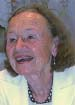

C.G. Jung Society, Seattle C.G. Jung Society, Seattle
C.G. Jung Society, Seattle C.G. Jung Society, SeattleLecture: Friday, February 10, 7 to 9 p.m.
Good Shepherd Center, Room 202, 4649 Sunnyside Ave. N., Seattle
$10 members, $15 nonmembers
2 CEUs

The lecture will begin with a retelling of the story about the young boy who fell in love with his own image as he saw it reflected in a tree-shaded pool. Hearing the story retold should help us realize how little of the depth of this myth is caught in the usual interpretations of narcissism . Narcissism is typically defined as a pathology, a personality disorder characterized by arrogance, exploitation, grandiosity and entitlement, by an excessive need for admiration, and by a lack of empathy.The rich depth psychological revisionings of this story put forward by Sigmund Freud, Lou Andreas-Salome, James Hillman and other Jungians help us to see that narcissism is not a pathology but an expression of a universal longing to return to that beginning time when self and other were one, not just a stage to be transcended but rather the persistent accompaniment of all our deeper experience. As Salome puts it, "There is a kind of narcissism that is an experience of being wholly at one with the world, not just absorbed in oneself." Indeed, reflection on this story leads us to think deeply about the relationship between self-love and the possibility of loving an other as other, between desire and the imagination, between soul and image, between the longing for wholeness and the longing for death.
Workshop: Saturday, February 11, 10 a.m. to 4 p.m.
Good Shepherd Center, Room 221, 4649 Sunnyside Ave. N., Seattle
$80 members, $90 nonmembers
5 CEUs
To learn about preregistering for the workshop, see Preregistration Policy and Form.
The workshop will provide an opportunity for us to explore together how the ripples sent out by reflections on the Myth of Narcissus touch upon our own experience. We will wonder together about such themes as the costs and blessings of introversion and self-absorption, about how desire and imagination have been fruitfully and destructively related in our own lives, about what it is that the soul most deeply longs for. There will be lecture and discussion and some time devoted to journaling—so bring pen and paper and wear comfortable clothes.
Christine Downing, Ph.D., currently a Professor of Mythological Studies at Pacifica Graduate Institute in Santa Barbara, taught for almost twenty years in the Department of Religious Studies at San Diego State University (a good part of the time as Chair of the Department and during the same period as a member of the Core Faculty at the San Diego campus of the California School of Professional Psychology). From 1963 to 1974 she served as a faculty member of the Religion Department at Douglass College of Rutgers University. She has also taught at the Jung Institute in Zurich and lectures frequently to Jungian groups both here and abroad and at American and European universities. Her undergraduate degree in literature is from Swarthmore College; her Ph.D., in religion and culture is from Drew University. Her books include The Goddess: Journey Through Menopause, Psyche's Sisters, Myths and Mysteries of Same-Sex Love, Mirrors of the Self, Women's Mysteries, Gods In Our Midst, The Long Journey Home, The Luxury of Afterwards, and Preludes: Essays in the Ludic Imagination.
This program has been approved for 7.0 CEU's by the Washington Chapter, National Association of Social Workers (NASW) for Licensed Social Workers, Licensed Marriage & Family Therapists and Licensed Mental Health Counselors. Provider number is #1975-157. The cost to receive a certificate is as follows: 7.0 units for lecture and workshop $15; 2.0 units for the Friday lecture $10; 5.0 units for workshop $10.
Updated: 7 January, 2006
webmaster@jungseattle.org